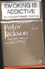
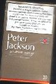

長男が社員旅行でオーストラリアへ行ってきた。とても１回で行ける人数ではないので、何グループに分けての社員旅行。
「なんだ、お前の会社はそんなに景気がいいのか」と聞くと、「あんまり不景気なので、不景気風をぶっ飛ばすために行くことになった」と、なんだかさっぱり分からん返事だった。（?_?）
帰ってきて土産だと云って差し出したのが、このオーストラリアたばこ。
 
表にデカデカと「喫煙には習慣性があります」、裏にも喫煙の害について警告が事細かく記載してある。タバコの横っ腹に小さくチョロチョロと書いてあるだけの日本とは大違いだが、それはまぁ、いい。問題は、その値段と味。
まず値段は、一箱（20本入り）なんと800円！。カートン（10箱）買いすると8000円！。σ(-_-)は平均一日一箱消費するから、オーストライアなら１ト月３万円コース。
おまけにその味たるや、思いっきりマズ○！。とてもじゃないが、のめたもんじゃない。いままで（この世でもっともマズ○のは、中○の紅○喜）と思っていたが、それよりはるかにマズ○！。日本のゴ−ルデンバットの方が、はるかにおいしい。
「こんなマ○イもん、誰も吸っていないだろう」と聞くと、「いや、そうでもなかった」という。「ふーん」と、ただ感心するしかない。やっぱりタバコは、どんなに高くてマ○くても、吸う人は吸うんだよね....
|